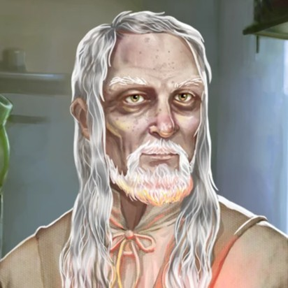
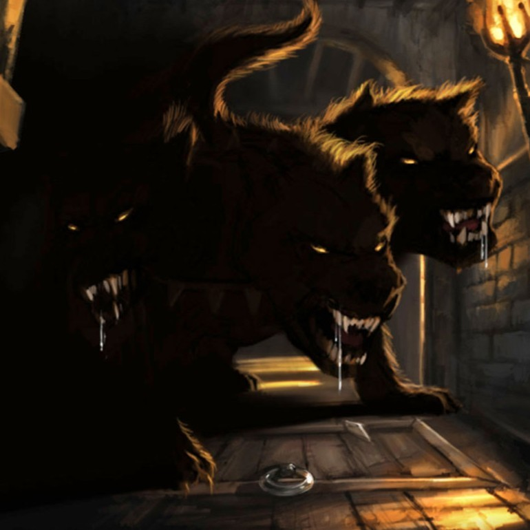
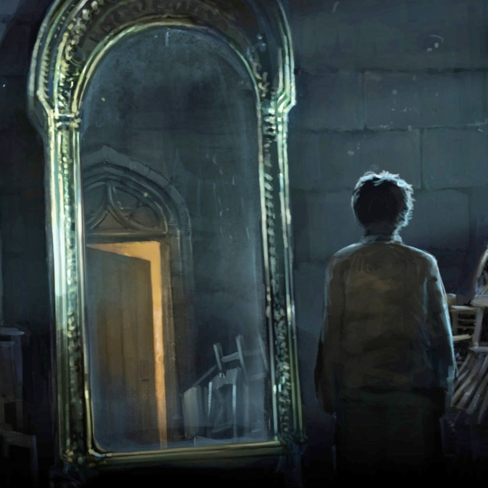

The Philosopher’s Stone was a small, blood-red stone made by the alchemist , and the only one ever known to exist. It turned any metal into pure gold, and from it could be brewed the Elixir of Life, which held back age for as long as its drinker kept taking it. On it Flamel and his wife Perenelle lived for more than six centuries., “Nicolas Flamel”
In 1991, after a thief came for it at , hid the Stone at , behind a chain of protections that ended in . The remnant of , living on the back of ’s skull, came for it in June 1992 and was stopped by an eleven-year-old ., “Quirrell” Afterward Dumbledore and Flamel agreed to destroy it, and the Flamels chose to let their long lives end., “The Leaving Feast”
Description
The Stone was small enough to close a hand around and slip into a pocket, and deep red, the color of blood. Wrapped in brown paper, it passed for a grubby little package: that was how it left Gringotts, in a gamekeeper’s coat., “Diagon Alley”
Properties
Turning metal to gold
The Stone could turn any metal into pure gold. The gold was real and it lasted, unlike the conjured or leprechaun kind that fades within hours. Had Flamel spent freely, the Stone could have emptied the worth out of every coin in Britain, wizard and Muggle alike. He never did. He and Perenelle made only what they needed to live, and they passed it only through , whose goblins knew where the gold came from and kept the secret for centuries. That long trust is why Gringotts was where the Stone was kept, and why the goblins guarded it.
The Elixir of Life
From the Stone could be brewed the Elixir of Life, which stopped its drinker’s aging and held off illness. It had to be drunk without end. A drinker who stopped began to age again, and in time died like anyone else. That was the bargain the Flamels kept for more than six hundred years.
What the Elixir did was keep a living body living. That is why Voldemort wanted it. In 1991 he was barely alive at all, surviving on unicorn blood and on a body he had to share. With the Elixir he could have kept a body of his own alive indefinitely, and been made whole., “The Forbidden Forest”
Limits
The Elixir held back time and sickness and nothing else. It closed no wound and lifted no curse, and a drinker could still be killed like anyone. It could not bring back the dead: it could keep a life going, never give one back.
Nor did the Stone choose whom it served. Unlike the oldest magic, which answers only to what is given or needed, the Stone was a made thing, and it worked as well for a murderer as for its maker., “What is needed, and what is meant” That was its danger. The Stone could not refuse a thief, so whatever guarded it had to judge for it.
Origin

Alchemy is a learned art, studied from books and worked at a bench. For centuries wizards and Muggles alike chased the Stone through it, and only one ever succeeded. made the Stone long ago, so long that he was the best part of seven hundred years old when it was destroyed. How he made it, he never told.
He and Perenelle lived quietly for most of those centuries, far from the wizarding world’s notice. One of the few who knew him well was , who worked with him on alchemy as a young man. That partnership was famous enough to appear on the back of Dumbledore’s Chocolate Frog card, which is where Harry Potter first read the name., “The Hogwarts Express”
History
The move from Gringotts (1991)
In the summer of 1991 Dumbledore had reason to believe the Stone was no longer safe even at Gringotts, and arranged to move it to Hogwarts. On 31 July , taking Harry to Diagon Alley for the first time, collected a small, grubby package from a high-security vault on Dumbledore’s orders, with Harry watching and none the wiser. That same night the vault was broken into and found already empty. Gringotts admitted the break-in and insisted nothing had been taken.
The protections at Hogwarts

At Hogwarts the Stone went beneath a trapdoor in a locked corridor on the third floor, which Dumbledore warned the whole school at the start of term to keep away from if they valued their lives. On the trapdoor sat , Hagrid’s enormous three-headed dog, who could not be got past awake and fell asleep at the sound of music., “The Third-Floor Corridor”
Below him the staff laid a chain of trials, each the work of a different teacher: a strangling plant, a storm of winged keys, a giant chessboard and a riddle of potions. Each could be passed by anyone clever, brave and determined enough, and none could truly keep the Stone safe., “Through the Trapdoor” The real lock was the last. Dumbledore hid the Stone inside the Mirror of Erised, an ancient glass that shows its viewer what they most desire, and laid on it a working of the old magic: only someone who wanted to find the Stone, and not to use it, could take it out.
The search (1991–1992)
Harry, and found Fluffy by accident, fleeing the caretaker on a night had challenged Harry to a duel she never meant to fight. Over the winter they worked out the rest. Hagrid let slip Flamel’s name, Hermione searched the library for weeks, and the answer turned out to be on the Chocolate Frog card Harry had forgotten in his pocket since the train. Certain that someone inside the castle meant to steal the Stone, they settled on .
In the spring, serving detention in with Dracaena Malfoy, Harry met the thing the Stone was meant for: a hooded figure drinking a slaughtered unicorn’s blood. The centaur Firenze told him what it was, the remnant of Voldemort, keeping itself alive until the Stone could restore it.
Beneath the trapdoor (1992)

In June 1992 Dumbledore was called away to London by a false summons, and Harry, Ron and Hermione went down through the trapdoor that night, since no adult would believe them. The trials thinned them to one, and Harry walked into the last chamber alone.
It was not Snape waiting for him but Quirinus Quirrell, with Voldemort’s face hidden beneath his turban on the back of his skull. Quirrell had stood before the Mirror for some time and seen only himself presenting the Stone to his master; the glass would not give it to a man who meant to use it. When Harry looked, he saw himself put the Stone in his pocket, and felt its sudden weight there. He wanted only to keep it from them, and the Mirror gave it to him.
Quirrell seized him, and his skin blistered and burned at Harry’s touch. Harry held on until the dark thing tore itself free of its host, and then the darkness closed over him. Dumbledore later explained the burning: Harry’s mother had died to save him, and a love like that left its mark in the very skin., “Quirrell (1992)”
Destruction
Harry woke days later in the hospital wing to learn that the Stone had been destroyed. Dumbledore and Flamel had talked it over and agreed it was for the best. The Flamels had enough Elixir stored to set their affairs in order, and after that they would die. They had made their peace with it. To Dumbledore it was not a tragedy but the natural end of a very long day, and he told Harry that the Stone had never been so wonderful a thing: what most people would choose, given the chance, was exactly what was worst for them.
Flamel took the art of its making with him. No other Philosopher’s Stone is known to exist, and none was found again in Harry Potter’s lifetime.
Related magic
- : the Stone was not part of it, but its last and best guard, the working on the Mirror, was.
- : the glass that kept the Stone, and the only one of its protections that could judge who came for it.
- : Voldemort’s other road away from death. The Elixir kept a life going on its own; a Horcrux is bought by taking someone else’s.
- : why Quirrell burned at Harry’s touch beside the Mirror.
- : another rare wonder that could do much, but never bring back the dead.
Etymology
The name is far older than Flamel’s Stone. To the alchemists of medieval Europe, wizard and Muggle alike, the “philosophers’ stone” (in Latin, lapis philosophorum) was the great goal of their art: a substance that would turn base metals to gold and grant long life. “Philosopher” then meant a student of nature, of what the world was made of and how it changed. Flamel was the only one to make the legend real, and his Stone kept its old name.
Changes from Canon
- The Elixir of Life holds back age and illness only. It heals no wound, lifts no curse and cannot bring back the dead.
- The Stone has no will of its own and serves whoever holds it. Only the Mirror of Erised, a working of ancient magic, could judge who was fit to take it; the teachers’ trials were built to be passable.
- Flamel made only the gold he and Perenelle needed, and passed it only through Gringotts, whose goblins kept his secret. This is why the Stone was first kept there.
Appearances
Trivia
- Harry saw the Stone before he knew it existed. It was the grubby little package Hagrid collected from Gringotts on his first day in Diagon Alley.
- The clue that unlocked the mystery reached Harry on his first journey to Hogwarts, on his very first Chocolate Frog card, and sat forgotten in his pocket for months.
- The Stone spent more than six hundred years with the Flamels and less than one at Hogwarts, most of it inside a mirror.
Behind the scenes
- The first book was published in 1997 as Harry Potter and the Philosopher’s Stone, after the alchemists’ legend. Its American edition (1998) was retitled Sorcerer’s Stone, and the Stone was renamed throughout. The Archive uses the original name, which keeps the link to the old myth.
- Nicolas Flamel was a real person, a scribe and bookseller in Paris who died in 1418. Legends that he had made the philosophers’ stone and never died grew up long after his death.
- The infobox picture is an officially licensed replica by The Noble Collection, which follows the films’ design. The books say only that the Stone is small and blood-red.